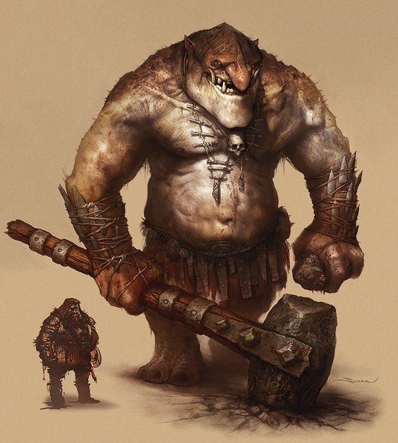

Trolls são criaturas gigantes que habitam montanhas, cavernas, e florestas densas. Suas origens remontam a antigos mitos nórdicos, onde eram retratados como seres que evitavam a luz do sol, pois esta os transformava em pedra. Eles são conhecidos por sua força bruta e capacidade de regeneração, o que os torna inimigos formidáveis em combate. Trolls geralmente vivem em tribos ou sozinhos e têm um intelecto limitado, mas são muito territoriais.